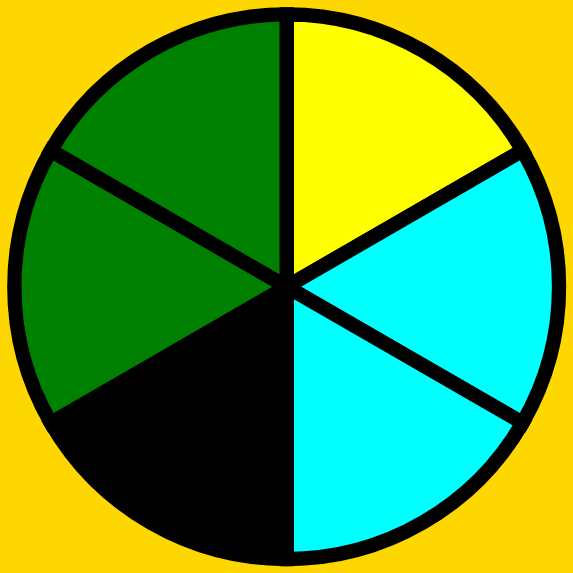
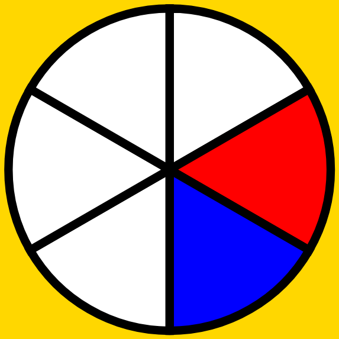
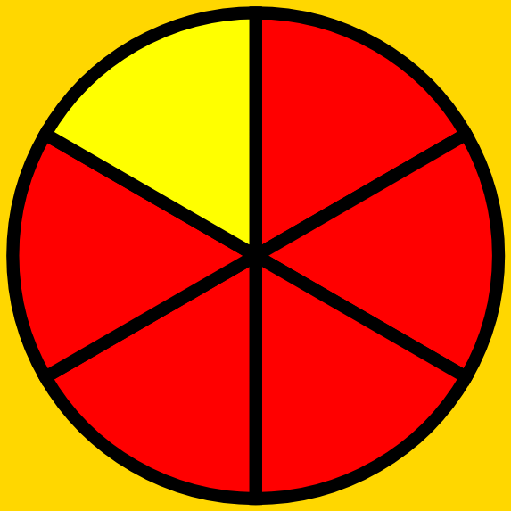
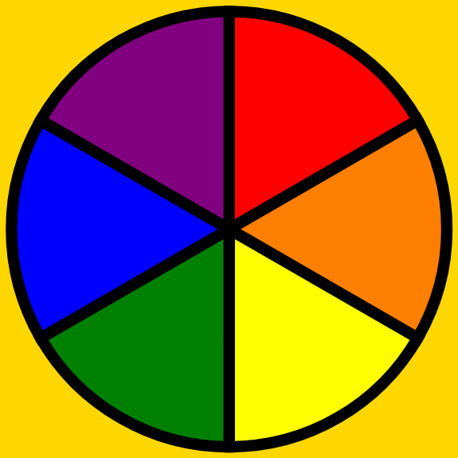

 
Language Wheels
 
< Back
Next Page >
Human selected wheels, indicated by
, are unlikely to change. The remaining wheels, indicated by
are randomly generated and will be reassigned if you propose a color scheme that is more relevant to the language and its speakers.